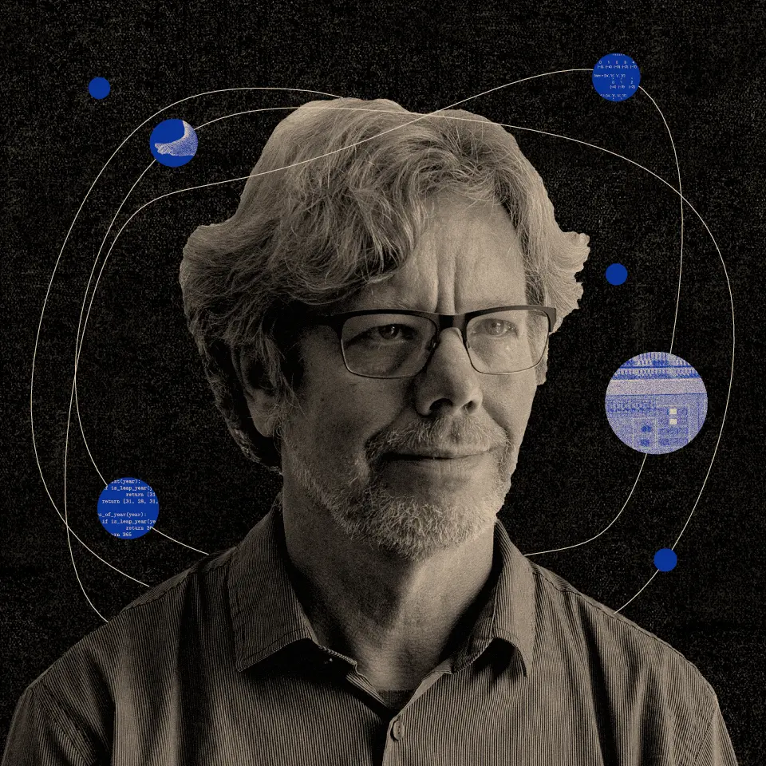

Python!
Хто ? Гвидо ван Россум
Нідерладський програміст, відомий завдяки створенню високорівневої мови програмування Python
Пайтон- інтерпритована об'єктно-орієнтована мова прогрумування високого рівня. Розроблена і анасована у 1991 році Гвідо ван Россумомю
Філософія Пайтон - "The Zen of Python" Команда import this
IDLE - Integrated Development and Learning Enviroment - це інтегроване середовище розробки мови Python. Названа на честь Еріка Айдла (Eric Idle) з Монті Пайтон
Офіційний сайт PythonПризначення: веб-програми, ігри, додатки, дослідження штучного інтелекту.